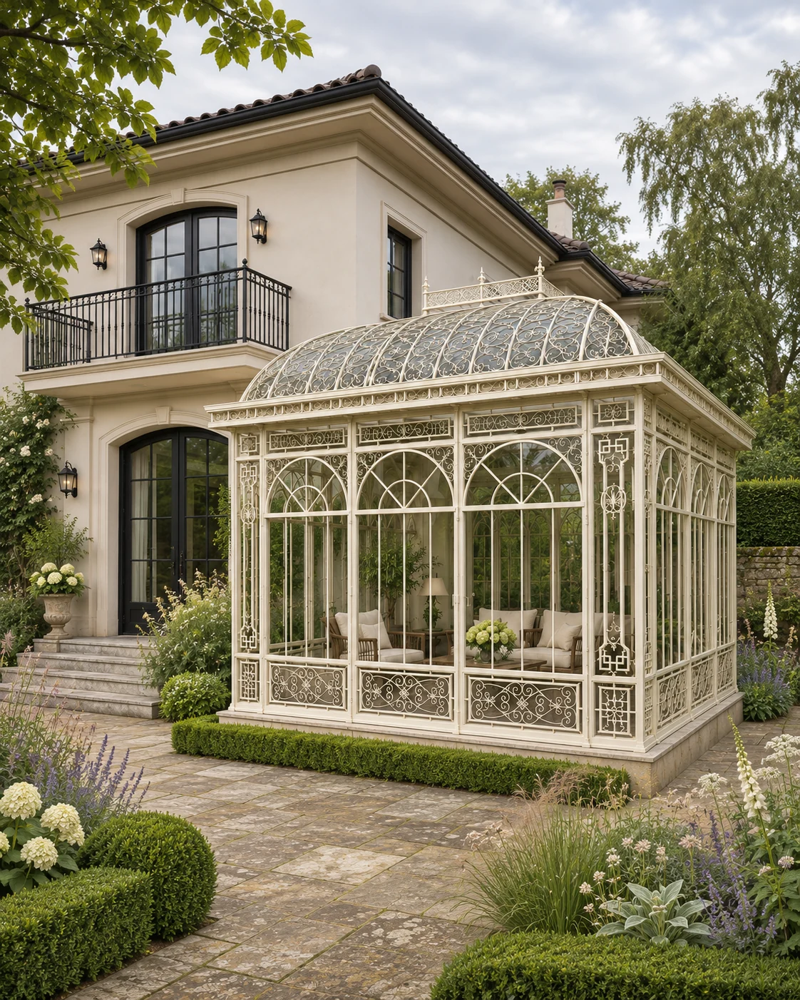

Contemporary glass room · House extension
The Terrace Glass Room
The project
The Terrace Glass Room
The Terrace Glass Room fills the corner where two walls of the house meet the terrace. Instead of a pitched conservatory roof, it uses a flat roof with a deep metal edge, which keeps the new room below the windows above and lets the house remain the dominant form.
Two pairs of arched double doors open straight onto the paving, so the room works as an extension of the terrace in summer and a sheltered garden room in winter.
- Location
- Istanbul, Türkiye
- Completed
- 2023
- Structure
- Glazed room built into the angle of the house
- Frame
- Steel, dark grey finish
- Roof
- Flat roof with a deep metal edge, falling to the garden
- Glazing
- Two arched double doors with ornamental side lights
- Footprint
- Approx. 5.4 × 4.0 m, about 21.6 m² (indicative, from our design-record drawing)
- Stage
- Completed structure
- Made by
- Steelwork fabricated and installed by our partner ironwork atelier in Türkiye
Frame, roof and glazing
The dark grey steel frame gives a clear outline against the pale render of the house. Ornamental side lights flank each pair of doors, adding detail at eye level while the roof edge stays plain.
Building into the corner means two sides of the room are formed by the existing house, so the junction with the walls, the opening from the house and the fall of the roof towards the garden were the key design decisions.
Design and build
From drawing to finished structure
Our design-record drawing shows the garden elevation, a section and the plan with its connection to the house and the surrounding terrace paving. It appears in our design studio as an example of how a glass room meets an existing building.
Similar designs

Develop your project
FROM A REFERENCE.
TO YOUR OWN SPACE.
See our bespoke steel and glass conservatories for house extensions, compare the House-Side Glazed Room design, or read the London conservatory planning guide before you start.
Share the setting and the direction you are drawn to, and we will discuss your garden project.
Your next space
LET’S BEGIN
WITH YOUR IDEAS.
Share the setting, the way you want to use the space and the designs you are drawn to.
Plan your project